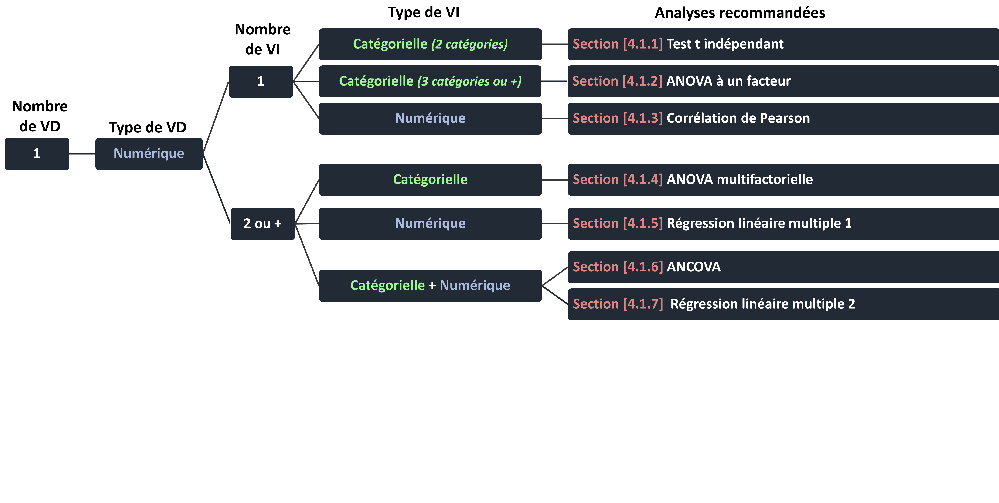
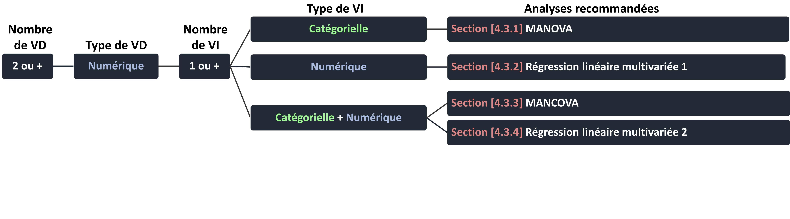

Chapitre 3 Etapes d’utilisation du manuel
Si vous n’avez jamais utilisé R auparavant, il est conseillé de commencer par vous familiariser brièvement avec les grandes fonctions de R en lisant rapidement la Section précédente “Familiarisation”.
Une fois familiarisé avec le fonctionnement de R, vous pouvez facilement adapter le code présenté dans ce manuel à vos données. Au cours de cette section, nous vous présentons les différentes étapes vous permettant d’y arriver.
3.1 Etape 1: Installation des packages nécessaires
Pour réaliser certaines analyses et pour produire des graphiques, ce manuel requiert que différents packages soient installés. Cette étape n’a besoin d’être réalisée qu’une seule fois. Chaque fois qu’un package aura besoin d’être chargé, il sera indiqué au début du code fournit dans ce manuel, de manière à ce que vous n’ayez pas besoin de charger l’ensemble des packages requis pour ce manuel à chaque fois.
Pour installer les packages obligatoires, copiez et collez simplement le code suivant.
3.2 Etape 2 : Sélection des analyses statistiques pertinentes
Une fois que vous vous êtes familiarisé avec le logiciel R et que l’ensemble des packages requis a été installé (Etape 1), une étape critique va être de sélectionner l’analyse statistique la plus appropriée à votre situation. Pour vous guider, nous avons construit des arbres décisionnels. Pour sélectionner les analyses pertinentes grâce aux arbres décisionnels décrits ci-dessous, vous devez simplement disposer :
- du nombre de variables indépendantes (VI) et du nombre de variables dépendantes (VD) de votre étude
- du type de chaque variable (numérique, ordinale ou catégorielle)
Une fois que vous disposez de ces informations, les arbres décisionnels vous permettront de sélectionner l’analyse pertinente et vous indiqueront le numéro de vignette décrivant la façon d’implanter cette analyse à l’aide du logiciel R.
Votre étude ne comporte qu’une seule mesure d’une VD numérique

Votre étude ne comporte qu’une seule mesure d’une VD catégorielle
Votre étude ne comporte qu’une seule mesure de plusieurs VD numériques

Une fois que vous avez sélectionné l’analyse statistique pertinente, reportez vous à la vignette correspondante (les numéros de section de chaque analyse sont indiqués dans les arbres décisionnels).
Le code sous-tendant chacune des étapes suivantes est systématiquement présenté au sein de chaque vignette.
3.3 Etape 3 : Charger votre fichier de données
Au début de chaque vignette, nous vous proposerons de charger votre fichier de données et de renommer les colonnes appropriées. Cette étape n’est obligatoire que si vous souhaitez analyser vos propres données. Si – dans un premier temps – vous souhaitez observer comment fonctionne le logiciel R, vous pouvez générer les données fictives. Chaque vignette comporte en effet un code permettant de générer des données fictives appropriées pour les analyses présentées dans la vignette (le code permettant de générer ces données fictives est donné au sein de la partie Données fictives). Ces données fictives n’ont pas d’autre but que de vous permettre d’appréhender simplement le fonctionnement de R.
Parfois, une étape relativement difficile dans R est d’arriver à charger son propre fichier de données. Afin de simplifier cette étape, une astuce est d’obliger R à ouvrir une fenêtre d’explorateur, afin que vous puissiez chercher votre fichier de données au sein de votre disque dur.
En fonction de vos besoins, copiez-collez la ligne de code dont vous avez besoin
# Si vous avez un fichier sauvegardé sous excel, commencez par charger la librairie du package `readxl` à l’aide de la commande suivante
library(readxl)
my_data <- read.delim(file.choose()) #si vous avez un fichier .txt
my_data <- read.csv(file.choose()) #si vous avez un fichier .csv
my_data <- read_excel(file.choose()) #si vous avez un fichier .xls ou .xlsxSi tout fonctionne bien, une fenêtre de l’explorateur devrait s’ouvrir et devrait vous permettre de localiser et d’ouvrir votre fichier de données facilement. Il arrive parfois que cette fenêtre s’ouvre en arrière-plan. Si aucune fenêtre d’exploration ne s’ouvre alors que vous avez entré une des commandes décrites, réduisez simplement la fenêtre de R ainsi que toutes vos autres fenêtres ouvertes. Vous trouverez cette fenêtre pour sélectionner votre fichier de données en arrière plan.
Une autre solution consiste à appuyer simultanément sur les touches “alt+tab” et de séletionner directement cette fenêtre.
3.4 Etape 4 : Déclarer le type de variable
R part de l’hypothèse selon laquelle toutes les variables contenant des chiffres sont des variables numériques et les variables contenants des caractères sont catégorielles. Une étape cruciale est donc de déclarer le type de chacune des variables impliquées dans les analyses.
Il existe deux types de variables catégorielles :
1. Les variables nominales (ou facteurs)
Les facteurs sont des variables dont les modalités ne peuvent pas être hiérarchisées. Par exemple, si vous vous intéressez aux types de pathologies mentales rencontrées par une population, vous obtiendrez une variable non-numérique, dont les modalités ne peuvent être hiérarchisées (e.g., « Schizophrénie », « Dépression », etc…). Lorsqu’un facteur contient deux modalités, cette variable est généralement appelée une variable binaire ou dichotomique tandis qu’un facteur contenant plus de deux modalités est généralement appelé une variable multicatégorielle si c’est une variable indépendante ou multinomiale si c’est une variable dépendante.
2. Les variables ordinales
Lorsqu’une variable ne respecte pas les conditions d’une variable numérique mais dispose de catégories qui peuvent être hiérarchisées les unes avec les autres, cette variable est appelée une variable ordinale. Par exemple, si vous vous intéressez à l’influence du niveau académique des étudiants (Licence / Master / Doctorat) sur une variable dépendante, votre le niveau académique ne peut être considérée comme numérique mais dispose de modalités pouvant être hiérarchisées (les étudiants en Licence ayant un niveau académique plus faible que ceux en Master, etc…).
3.4.1 Déclarer une variable en tant que variable nominale / facteur
Pour un jeu de données stocké sous le nom d’objet my_data , déclarer une variable nommée Variable1 en tant que facteur nécessite d’utiliser la commande :
my_data$Variable1 <- factor(my_data$Variable1)
Pour rappel, le code my_data$Variable1 permet de sélectionner la colonne ayant le nom Variable1 au sein du jeu de données nommé my_data. Avec la commande ci-dessus, nous remplaçons la variable Variable1 par la variable Variable1 déclarée comme facteur. Libre à vous de stocker la variable Variable1 en tant que facteur sous un autre nom.
Par exemple :
my_data$Variable1Facteur<-factor(my_data$Variable1)
Dès lors, la nouvelle Variable1Facteur est égale à la variable Variable1 déclarée comme facteur.
3.4.2 Déclarer une variable en tant que variable ordinale
Pour un jeu de données stocké sous le nom d’objet my_data , déclarer une variable nommée Variable1 en tant que variable ordinale nécessite d’utiliser la commande :
my_data$Variable1 <- ordered(my_data$Variable1)
Pour rappel, le code my_data$Variable1 permet de sélectionner la colonne ayant le nom Variable1 au sein du jeu de données nommé my_data. Avec la commande ci-dessus, nous remplaçons la variable Variable1 par la variable Variable1 déclarée comme variable ordinale. Libre à vous de stocker la variable Variable1 en tant que variable ordinale sous un autre nom.
Par exemple :
my_data$Variable1Ord<-ordered(my_data$Variable1)
3.4.3 Déclarer une variable en tant que variable numérique
Pour un jeu de données stocké sous le nom d’objet my_data , déclarer une variable nommée Variable1 en tant que variable numérique nécessite d’utiliser la commande :
my_data$Variable1 <- as.numeric(as.character(my_data$Variable1))
Pour rappel, le code my_data$Variable1 permet de sélectionner la colonne ayant le nom Variable1 au sein du jeu de données nommé my_data. Avec la commande ci-dessus, nous remplaçons la variable Variable1 par la variable Variable1 déclarée comme variable numérique. Libre à vous de stocker la variable Variable1 en tant que variable numérique sous un autre nom.
Par exemple :
my_data$Variable1Num<-as.numeric(as.character(my_data$Variable1))
3.5 Etape 5 : Inspecter les données et la distribution de vos variables
R n’ayant pas d’interface graphique, il est très important de visualiser les données chargées. Soit my_data un jeu de données comprenant 4 variables (80 observations)
- la variable VD1.cont est une variable dépendante numérique
- la variable VI1.cont est une variable indépendante numérique
- la variable VI2.cat est une variable indépendante catégorielle
- la variable VI3.cat est une variable indépendante catégorielle
Pour visualiser l’ensemble de votre jeu de données, il vous suffit de rentrer, dans la console de R :
View(my_data)pour voir l’ensemble de votre jeu de donnéeshead(my_data)pour voir les premières lignes de votre jeu de donnéestail(my_data)pour voir les dernières lignes de votre jeu de données
Utilisation du package GGally pour inspecter ses données
Une inspection visuelle de la distribution de vos variables et de leurs associations deux-à-deux est possible facilement grâce à un package : GGally. Nous vous décrivons un exemple afin de vous familiariser avec les sorties de ce package
library(GGally)
ggpairs(data = my_data,
lower = list(continuous = wrap("smooth", alpha = 0.7), combo = "box_no_facet"),
upper = list(combo = "facetdensity", discrete = "facetbar"),
mapping = aes(alpha = 0.8)) + theme_bw()
Au niveau de la diagonale, les graphiques représentent la ditrisbution des variables. Les variables numériques sont représentées sous la forme d’une densité tandis que les variables catégorielles sont représentées sous la forme d’un diagramme en bâton.
Au dessus et en dessous de la diagonale, les graphiques représentent les associations deux-à-deux entre chacune des variables.
- Au-dessus de la diagonale:
- les associations entre 2 variables numériques sont représentées par leur coefficient de corrélation.
- les associations entre une variable catégorielle et une variable numérique sont représentées sous la forme d’une courbe de densité de la variable numérique pour chaque modalité de la variable catégorielle.
- les associations entre deux variables catégorielles sont représentées par le diagramme en batôn d’une variable catégorielle pour chaque modalité de l’autre variable.
- En-dessous de la diagonale:
- les associations entre 2 variables numériques sont représentées sous la forme d’un nuage de points (la droite représente la pente de la corrélation).
- les associations entre une variable catégorielle et une variable numérique sont représentées sous la forme d’un diagramme en boîte.
- les associations entre deux variables catégorielles sont représentées par le diagramme en batôn d’une variable catégorielle pour chaque modalité de l’autre variable.
Pour adapter cette commande à votre propre jeu de données, la seule modification à effectuer est de remplacer data = my_data par data = le.nom.de.votre.propre.jeu.de.données
3.6 Etape 6 : Réaliser votre analyse statistique et obtenir des tailles d’effet et/ou tests-post-hoc
Cette étape ne demande que de copier et coller le code décrit dans la partie Analyse des données présente dans chaque vignette.
3.6.1 Vous n’êtes pas habitué aux sorties de résultats générées par R
Nous vous conseillons de vous familiariser avec les sorties de résultats générées par R grâce aux données fictives associées à la partie « Interprétation » présentent dans chaque vignette.
Ces données fictives comportent :
- une ou plusieurs variables indépendantes. Si elles sont de type numérique, elles sont appelées VI.cont. Si elles sont de type catégoriel, elle sont appelées VI.cat (si elles comportent 2 catégories), VI.multicat (si elles comportement plus de 3 catégories) et VI.ord (si elles sont ordinales).
- une ou plusieurs variables dépendantes. Si elles sont de type numérique, elles sont appelées VD.cont. Si elles sont de type catégoriel, elle sont appelées VD.cat (si elles comportent 2 catégories), VD.multicat (si elles comportement plus de 3 catégories) et VD.ord (si elles sont ordinales).
Une fois ces données fictivités générées il vous suffit de :
- Réaliser les analyses grâce au code fourni dans la partie Analyse des données
- Générer la sortie graphique associée afin d’avoir une représentation visuelle des données grâce à la partie Graphique
- Comparer la sortie de R aux résultats décrits dans la partie Interprétation présente dans chaque vignette. Les valeurs décrites dans la partie interprétation correspondent aux résultats produits par l’analyse des données fictives.
3.6.2 Vous êtes habitué aux sorties de résultats générées par R
Chargez votre fichier de données grâce aux commandes fournies dans la partie Données réelles et adaptez simplement le code des parties Inspection des données, Analyse des données et Graphique de la vignette correspondant à votre analyse au besoin. Lorsque vous souhaitez appliquer le code directement à vos données, il n’est pas nécessaire de générer les données fictives, et la partie interprétation ne vous sera pas utile.
3.7 Etape 7 : Obtenir une représentation graphique
Le code de la partie “Graphique” permet d’avoir une représentation graphique de vos données, fournissant ainsi une aide visuelle à l’interprétation de vos données.